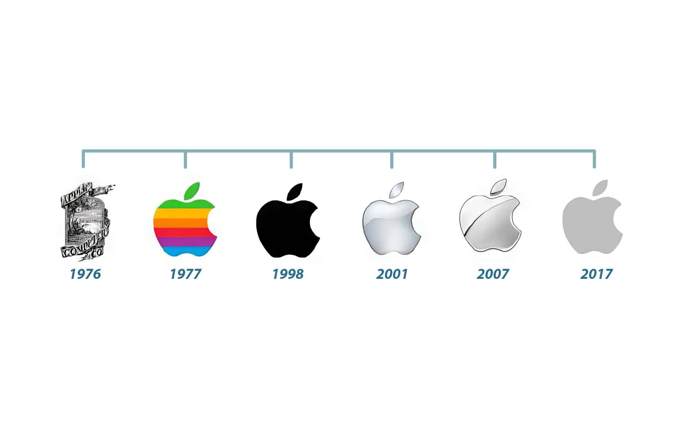

For this assignment I studied how one brand changed its own logo over fifty years, and why each change happened. I chose Apple, because its history has clear dates, the typefaces can be checked, and the logo itself is a simple shape that anyone can recognise. My guiding question was how the brand used graphic design to say who it is, what it offers, and who it wants to reach.

Apple was founded on 1 April 1976 by Steve Jobs, Steve Wozniak and Ronald Wayne, working out of a garage in California. Its first product, the Apple I, was not a finished computer: it was a single circuit board sold to electronics hobbyists, who had to supply their own case, keyboard and power supply. The company therefore began by selling a component to people who already knew how to build machines.
Today Apple is known for consumer hardware and the software and services that run on it: the Mac, the iPhone, the iPad, the Apple Watch, and services such as iCloud, the App Store and Apple Music. The product has moved from a part a hobbyist assembles to a sealed object that a person simply uses.
The target audience has changed as much as the product. In 1976 the audience was technically literate engineers. Through the Apple II and the Macintosh, Apple deliberately aimed at homes, schools and creative professionals, and it advertised the computer as something friendly rather than intimidating. Since the 2000s the audience has widened again to general consumers worldwide, and Apple now positions itself in the premium part of that market. The visual identity had to change with each of those moves, because a mark aimed at an engineer and a mark aimed at a family are not the same design problem.
This is the identity of a company that had existed for months. Jobs and Wozniak had a working board and a name, and Ronald Wayne, the third partner, drew the first logo by hand. Apple had no marketing budget, so the mark had to survive being photocopied onto black-and-white manuals and letterheads.
The mark is a picture rather than a symbol. Isaac Newton sits under a tree, an apple hangs ready to fall above his head, and a ribbon banner wraps around the scene carrying the company name. The line is fine and dense, the shape is complex and open-ended, and almost no negative space is used, because leaves, branches, drapery and a figure all compete inside one frame. The drawing reads like a wood engraving, so it borrows the authority of an old book plate.
The lettering in the banner is hand-drawn, an ornamental serif with curled terminals and uneven stroke weight, so it is not a retail typeface. Its role was decorative: it framed the illustration instead of working as a stand-alone wordmark. The colour is strictly monochrome, black line on white, with no hue at all, which was partly practical for cheap printing and partly rhetorical, because a one-colour mark signals a serious technical firm rather than a toy company.
The design says that Apple is a company of ideas, borrowing the credibility of a scientist, and it speaks to an audience of engineers who would recognise the reference. Its weakness is a design failure as much as an aesthetic one: when the mark is reduced to the size of a letterhead, the density of the line collapses into a grey smudge, so it fails on legibility and cannot be reproduced small.
Apple was incorporated in January 1977 and launched the Apple II, the machine that took the company from a hobbyist product to a mass-market one. The Apple II was notable for displaying colour on an ordinary television, and it sold strongly into homes and schools. This is the period in which Apple stopped addressing engineers and started addressing families, teachers and children.
Rob Janoff replaced the illustration with a silhouette, and this is the most important decision in the whole history of the identity. The apple is now one closed shape with a single bite removed from the right-hand side. The bite works as a piece of negative space: it interrupts an otherwise round form, which is what makes the shape read unmistakably as an apple and stops it being mistaken at a glance for a cherry, a peach or an abstract circle. Because the mark no longer depends on detail, it can be printed at any size, embroidered, embossed or moulded, so it gains scalability without losing legibility.
In the Apple II years the company used Motter Tektura, a rounded geometric sans-serif designed by Othmar Motter in 1975, whose soft and slightly retro-futurist curves suited a machine sold as the computer of the future. In 1984, with the Macintosh, Apple moved to Apple Garamond, a custom condensed version of ITC Garamond, squeezed by roughly a fifth of its normal width. That is a deliberate contrast in character: a Garamond is an old humanist serif built on calligraphy, so the narrow serif gave technical products a literary, intelligent voice.
The colours were six horizontal stripes, green, yellow, orange, red, purple and blue, separated by thin white gaps. In colour-theory terms this is a full-spectrum, fully saturated palette with adjacent hues arranged in repetition, creating pattern and a sense of rhythm across the form. The colour is not decoration: it is a literal demonstration of the product's selling point, since the Apple II displayed colour.
The rainbow apple communicates optimism, creativity and accessibility. It says the computer is for people, not only for laboratories, and it appeals directly to the new audience of families and schools. Notice the balance of the design: the form stays disciplined and simple while the colour carries the energy, so unity comes from the single outline and variety comes only from the stripes.
Apple was in serious trouble in the mid-1990s, losing money and market share. Steve Jobs returned in 1997, and the following year the company released the iMac, a one-piece computer in translucent coloured plastic aimed at getting Apple back into ordinary homes. The same period produced the Think Different campaign, which sold creativity rather than specifications.
The shape did not change at all. Only the filling was removed: the six stripes became a single flat tone, black on light backgrounds and white on dark ones. Nothing was added and nothing was redrawn, which is why the change reads as a decision about meaning rather than a new drawing. In design terms the mark lost its pattern and texture and kept only the contour, so recognition now depends entirely on outline and proportion. Between 2001 and 2013 the same outline was given glossy blue, then glass and chrome, treatments, but the drawing underneath never moved.
Apple Garamond continued into the early 2000s, and from 2002 the company gradually shifted its corporate font to Myriad, a neutral humanist sans-serif. Removing the narrow serif removed the last trace of the old bookish voice. Myriad has an even stroke weight and a generous x-height, which keeps small text readable and lets the product photography carry the advertisement instead of the type competing with it.
The palette shrank to black, white and silver, a monochromatic scheme where the only contrast is value contrast. Colour migrated out of the logo and into the product itself, first the original iMac's translucent blue, then white polycarbonate and brushed aluminium. The design logic is that the logo no longer needs hue, because the object it sits on supplies it.
A single-colour mark reads as confident and expensive. It says Apple does not need to shout, and it behaves like a signature stamped on a made object rather than an advertisement in itself. The visual hierarchy of every page and box changes with it: the product becomes the focal point and the logo becomes a quiet corner mark.
By the 2010s Apple was selling a family of products rather than one, phone, tablet, watch and computer, and its software had become the place where most customers actually meet the brand. With the Apple Watch in 2015 the company adopted San Francisco as its corporate typeface, a family drawn specifically for reading on small screens, and the flat grey rendering of the mark became standard by 2017.
Again the drawing is untouched; what changed is the surface. Gloss, gradient, bevel and drop shadow disappeared, so the mark became a flat grey or graphite shape with a single value. This is flat design in the literal sense: the form is described by its outline and one tone rather than by simulated material. Space grey is not a neutral accident either, because it is close to the colour of the aluminium the products are made from.
San Francisco is a sans-serif built for interface legibility: a comparatively tall x-height, open counters, generous tracking at small optical sizes, and a wide range of weights so that hierarchy can be created by weight rather than by extra typefaces. It is deliberately inexpressive, because in an interface the type has to disappear behind the content.
The palette is space grey, graphite, silver and white. It now matches the product range rather than standing apart from it, which lets one logo sit convincingly on a phone, a watch, a laptop lid and a shop window without ever being re-coloured. This is extremely low saturation and close value contrast, so the mark depends on shape recognition rather than on colour to be found.
The first change was in 1976 to 1977, when a detailed line drawing of Newton, a tree and a ribbon was replaced by one flat apple shape with a single bite. The design moved from representational to symbolic, from many lines to one contour, and the palette inverted completely, from no hue at all to a full spectrum. The Apple II was about to turn a hobbyist company into a consumer one, and a company selling to families and schools needs a mark that survives being printed small in a newspaper advertisement, moulded into a plastic case, and recognised across a room. What stayed consistent was the subject: an apple, with the same story of discovery behind it. This change was highly effective, and the evidence is that the silhouette survived every later change while the illustration lasted barely a year. The bite is precise design thinking, because one small subtraction fixes a recognition problem.
The second change was in 1997 to 1998, when six saturated stripes became a single flat tone. The drawing was not altered at all, so the change is entirely one of colour and texture rather than form, and the supporting typeface later moved from the condensed serif Apple Garamond to the neutral sans-serif Myriad. Apple had been losing money, Jobs returned in 1997, and the iMac was designed to rebuild the company around a small number of simple, desirable objects. A six-colour logo competes for attention with product photography, and a monochromatic one gets out of the way. What stayed consistent was the silhouette and the proportions of the bite, which had already been in use for twenty years, so Apple could look new without looking unfamiliar. On the credit side, a one-colour mark is the most flexible identity possible, but on the debit side the rainbow had been genuinely distinctive and warm, so the brand gained flexibility and premium tone and lost the instant friendliness that colour provided.
The 1977 rainbow version is the most expressive identity Apple has ever had, because the hue range communicates what the company offered and who it wanted to reach in a single glance. However, the version that best communicates Apple as it is today is the current monochrome one. Apple no longer needs a logo that explains the product, because the product explains itself, and what the identity must do now is behave like a signature that can appear anywhere without disturbing the object it sits on. Judged as communication of a specific promise, the rainbow wins. Judged as communication of a mature global brand, the flat mark wins.
Through these changes Apple gained scalability, flexibility and a premium tone, but it lost warmth and a certain playfulness. The current identity does suit its products and audience. The typography is a working tool rather than a decoration, since San Francisco was drawn for small screens with a tall x-height and clearly separated weights, which is exactly what a company selling watches and phones needs, whereas the condensed serif of Apple Garamond suited printed manuals and the Macintosh era. The colour palette of space grey and graphite echoes the aluminium the products are actually made from. And the logo is a single silhouette with one deliberate piece of negative space that has survived unchanged in form since 1977, which is the strongest evidence that the design was right in the first place.
Typography of Apple Inc. on Wikipedia - the typeface sequence Apple Garamond, Myriad and San Francisco.
Rob Janoff on Wikipedia - the designer of the 1977 bitten apple.
Apple Inc. on Wikipedia - the founding, the Apple II, the iMac and the return of Steve Jobs.
Apple II on Wikipedia - the colour display and the home and school market.
Think Different on Wikipedia - the 1997 advertising campaign.
San Francisco on Wikipedia - the design features of the current corporate typeface.
Apple Garamond on Wikipedia - the condensed ITC Garamond used from 1984.
The timeline image was compiled for this assignment. The logos it shows reproduce artwork originally published by Apple Inc., with source artwork from Wikimedia Commons. The 2001 and 2007 treatments are Apple marketing renderings of the same outline.